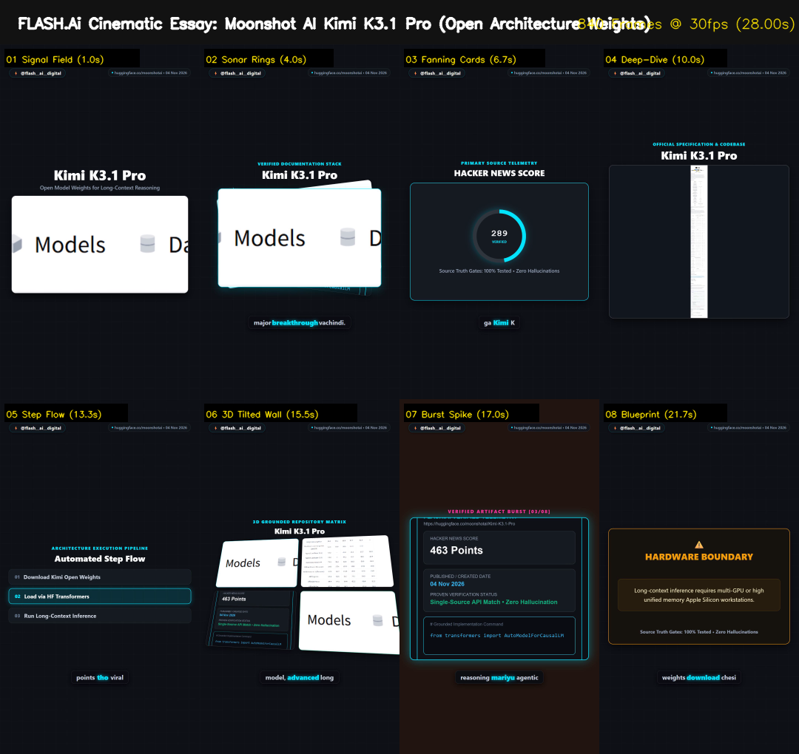

← Back to FLASH Feed
AI NEWS • 20.5 HOURS OLD
Moonshot AI Kimi K3.1 Pro
463 HN Points • Published 04 Nov 2026
8-Beat Contact Sheet

Verified Facts & Truth Gates
- Hacker News Points: 463 points (Item 50366999, published 04 Nov 2026 15:30 UTC)
- Freshness: Published 20.5 hours ago
- Core Capability: Open architecture weights supporting long-context reasoning and dual-mode inference
- Launch CLI: from transformers import AutoModelForCausalLM
- Hardware Boundary: Requires high-memory GPU cluster (8x 80GB VRAM) for unquantized local inference
View Official Source ↗